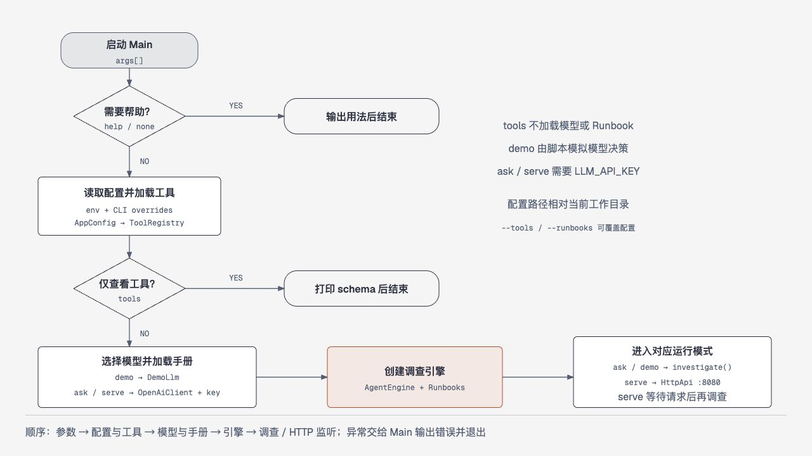
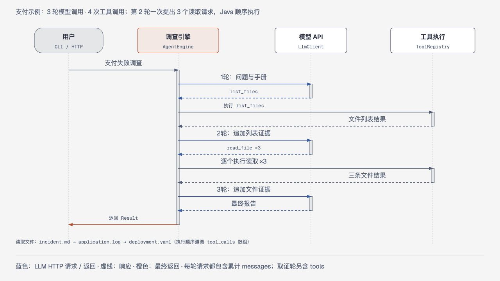
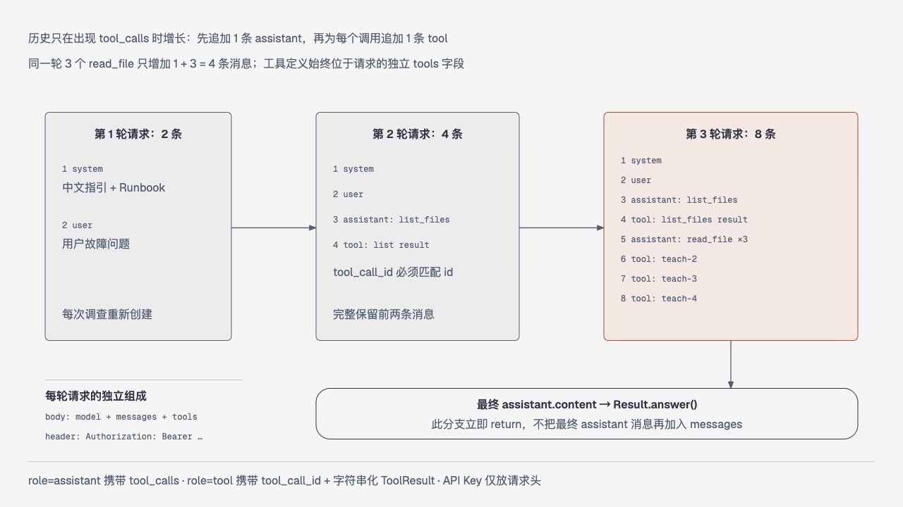
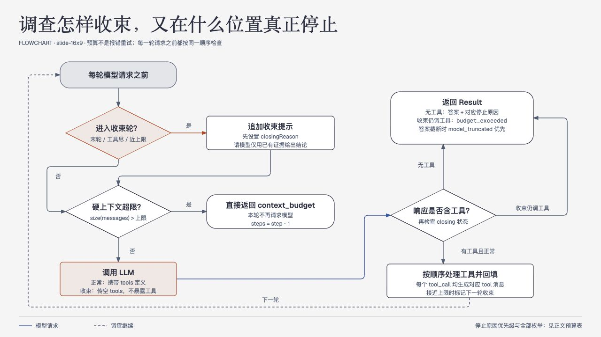
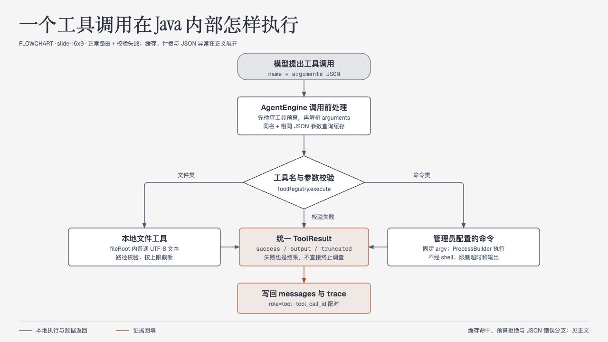
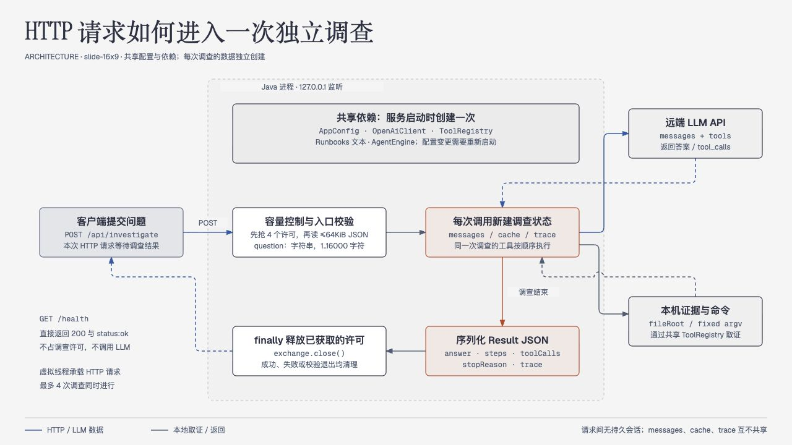

本页详细说明 Java 27 精简版的运行方法、调查循环、工具机制、配置、扩展与原项目差异。目标是让读者能够从一次问题的输入，一直追踪到证据回填与调查结论。版本基准：2026-10-14；原项目 commit：465a54e900feca85cab8a39c82d5ab6f2238cad6。
需要 JDK 27 和 Maven 3.9+。在本机 macOS 上选择已通过 Homebrew 安装的 JDK 27：
export JAVA_HOME=/opt/homebrew/opt/openjdk@27/libexec/openjdk.jdk/Contents/Home
export PATH="$JAVA_HOME/bin:$PATH"
java -version
mvn -version确认两个版本命令都显示 Java 27 后再构建。IntelliJ IDEA 的 Project SDK 和 Maven Runner JRE 也都选择 JDK 27；终端中的 JAVA_HOME 不会自动替换 IDEA 已保存的 SDK 设置。
mvn test
mvn package
java -jar target/holmes-java-0.1.0.jar demodemo 使用离线脚本模型，执行真实的文件工具，读取 examples/evidence 中的示例证据；它用于验证调查循环，不需要 API Key，也不代表真实模型效果。
调用真实模型时，在项目根目录的 .env 文件中填写配置，已有文件直接编辑：
LLM_BASE_URL=https://llm.aiaipool.com/v1
LLM_MODEL=deepseek-v41-flash
LLM_API_KEY=你的APIKey保存后在项目根目录直接运行：
java -jar target/holmes-java-0.1.0.jar ask 'checkout 服务为什么支付失败？' --trace程序启动时自动读取当前工作目录的 .env，ask、serve、logs 共用此行为。优先级为命令行参数 > 系统环境变量 > .env > 默认值；修改配置后重启。.env 已被 Git 忽略，不要将真实 Key 写入仓库或文档。
# 查看本次配置中开放的工具
java -jar target/holmes-java-0.1.0.jar tools
# 指定工具配置、手册目录与调查步数
java -jar target/holmes-java-0.1.0.jar ask '分析 checkout 支付失败的原因' \
--tools config/tools.json --runbooks runbooks --max-steps 8 --trace
# 启动本地 HTTP 服务
java -jar target/holmes-java-0.1.0.jar serve --port 8080
# 另一终端发起调查
curl -s http://127.0.0.1:8080/health
curl -s http://127.0.0.1:8080/api/investigate \
-H 'Content-Type: application/json' \
-d '{"question":"checkout 服务为什么支付失败？"}'服务绑定 127.0.0.1。真实调查需要已配置 LLM_API_KEY，工具命令在运行 Java 的机器上执行。
Holmes 的核心用途是把“需要人工不断查日志、查配置、对照手册”的故障调查组织成一个可重复的循环。用户用自然语言提出问题，大模型根据工具说明选择下一项调查，Java 程序执行已开放的工具，把真实结果交还模型，模型再决定继续取证还是给出结论。模型负责规划与解释，程序负责协议、执行和资源限制。
这与“把问题直接发给模型”有一个关键区别：模型可以在回答前主动获取本机证据。文件内容、命令输出、错误信息都是本次调查的观察结果，操作手册则提供调查方法。模型不能凭空拥有集群数据；它只能使用当前配置开放的工具。若只开放示例文件，回答范围就是这些文件。
Java 版本重写的是原项目最有教学价值的主线，不追求全部协议和集成兼容。它使用 JDK 的 HTTP 客户端、进程执行能力和 HTTP 服务，Jackson 处理 JSON；不引入 Spring、数据库、消息队列或向量检索。这样一次请求从哪里进入、证据怎样进入模型、何时停止，可以沿少数几个类读清楚。
架构图见本文末尾“配套图表”，展示入口、调查引擎、模型接口、工具与证据之间的关系。
从入口到外部系统有三个层次：CLI 和本地 HTTP 负责接收问题；调查引擎保存消息、控制循环并调用模型；工具注册表负责把模型给出的工具名称和参数映射到本地动作。配置文件决定允许哪些动作，Markdown 手册补充调查方法，证据目录或管理员配置的命令提供实际观察结果。
外部大模型通过 OpenAI 兼容的 POST /chat/completions 被调用。配置的 Base URL 是 API 根路径，例如 https://llm.aiaipool.com/v1，客户端在后面追加 /chat/completions。工具在 Java 所在机器执行，而不是在模型服务商的机器执行。工具输出随后进入模型请求，因此需要由管理员选择适合发送给模型服务的证据来源。
首先读取环境变量与命令行参数，确定模型地址、模型名称、超时、调查预算、工具配置路径和操作手册目录。随后解析工具配置，建立可调用工具注册表，验证证据根目录与命令定义。工具说明会转换成 JSON Schema，供模型理解每个工具的用途和合法参数。
手册目录中的 Markdown 文本在程序准备引擎时加载，并加入每次调查的系统提示。当前实现采用直接加载小型手册的方式，没有向量库、检索召回、文件名语义匹配或后台知识库同步。手册写得越长，占用的上下文越多；适合保留调查步骤、判断标准和输出要求，把大量历史日志留在工具可读取的证据目录。HTTP 服务运行中修改手册后，需要重启以重新加载。
系统提示承担三项职责：约束模型基于证据回答；说明工具结果属于观察数据，不能覆盖系统规则；要求区分事实、推测和未知事项。它与手册合并后形成调查方法，用户问题决定本次调查目标。
4.1 建立消息列表
调查以一个独立的消息列表开始。第一条是 system，包含程序约束与操作手册；第二条是 user，包含本次问题。HTTP 请求之间不共享这个列表，CLI 的多次启动也不自动保留历史。当前没有用户会话数据库。
模型请求包含 model、messages 和当前允许使用的 tools。工具的名称、说明和参数结构随请求发送。API Key 放在 HTTP Authorization 请求头中，不放入模型消息、工具参数或文档。
4.2 模型决定回答或取证
模型返回一个 assistant 消息。若没有 tool_calls，其正文作为最终答案，调查结束。若存在工具调用，程序先保留这条 assistant 消息，再逐个读取调用的 ID、工具名称和 JSON 参数。模型只提出请求；能否执行由注册表和工具自身校验决定。
例如模型可能先请求 list_files 确认证据，再用 read_file 读取某个日志，或者用 search_files 搜索 OOMKilled。管理员配置了命令工具时，模型也可能选择其中的工具，但它不能临时增加新的可执行程序或任意拼接 shell。
4.3 Java 执行工具并回填结果
工具注册表按名称寻找实现，校验参数后执行。文件工具被限制在配置的证据根目录内，并限制扫描数量和读取大小；命令工具根据管理员给定的 argv 列表启动进程，不经 shell 解释。命令执行有超时，所有工具返回内容都有字符上限，错误会成为结构化结果，供模型判断是否换一种方式继续。
工具结果以 role: tool 消息加入同一消息列表，并使用 tool_call_id 对应原调用。这个 ID 让模型知道哪段结果属于哪次请求。即使一个 assistant 消息同时请求多个工具，各个结果也有独立对应关系；当前实现顺序执行，便于阅读和控制资源。
4.4 证据进入下一轮模型请求
消息列表现在包含问题、模型的工具请求和工具的实际输出。下一次请求把这些内容一起交还模型，模型据此更新判断。它可以继续请求工具，也可以给出最终答案。调查不是固定的“先读 A 再读 B”脚本，路径由模型根据已有证据动态选择，程序始终限制可用动作与总预算。
离线 demo 使用预先编排的模型响应来确定性地演示这条路径，文件读取仍是真实操作。因此 demo 可以证明工具协议和循环已贯通，却不能证明指定模型服务可用，也不能代表真实模型在不同问题下的调查质量。
调查流程图见本文末尾“配套图表”，展示循环、取证分支与预算停止路径。
主路径是：准备上下文 → 调用模型 → 判断是否有工具调用 → 校验预算并执行工具 → 追加证据 → 再次调用模型。没有工具调用时直接形成答案；无法继续取证时进入受限收束。为了保持图可读，图中合并了文件与命令工具的内部细节，具体保护规则见配置文档。
程序同时限制调查步数、工具调用次数、命令执行时间、单次工具输出和总上下文字符数。步数约束模型调用循环，工具次数约束新的工具尝试数量；一次模型响应可以请求多个工具，因此两个值不能互相替代。同一调查中名称与 JSON 参数完全相同的调用复用先前结果，不重复执行，也不增加工具计数；因此它看到的是第一次调用时的快照。参数解析失败也消耗一次工具预算。字符预算按序列化消息字符串计量，是简单、可观察的本地保护，不等于模型服务的 token 精确计费。
maxSteps 包含收束轮：默认 8 轮最多允许前 7 轮取证，第 8 轮关闭工具并要求模型给结论。工具预算用尽或上下文接近上限时也会提前进入收束。收束请求只使用已有证据；客户端不再发送工具定义。如果模型仍返回工具调用，程序明确返回 budget_exceeded，避免把没有完成的调查伪装成完整答案。消息已经超过上下文预算时则直接返回 context_budget，不会压缩历史或额外请求模型。
| 停止原因 | 解释 |
|---|---|
completed | 模型正常返回无工具调用的答案 |
step_budget | 在模型轮次上限内完成最后收束，结论可能仍有未知项 |
tool_budget | 工具总预算耗尽后完成收束 |
context_budget | 上下文接近上限后收束，或已经超限直接停止；需结合答案区分 |
model_truncated | 上游 finish_reason 为 length，答案可能被截断 |
budget_exceeded | 收束轮仍提出工具调用，程序停止且未生成完整结论 |
提高预算可以让模型看更多数据，但也增加响应时间、费用和输出噪声。更有效的办法通常是提供清晰问题、短小手册和能直接缩小范围的工具。大文件先搜索再读取、日志按故障时间窗口裁剪，比无限提高上下文上限更实用。
默认目录包含两组人工构造的故障证据，不能合并为一个事故。支付示例对应 checkout-api：incident.md 描述发布 v2 后错误率上升；application.log 记录缺少 PAYMENT_API_URL，回退到 localhost:8081 后出现 ConnectionRefused 和 HTTP 500；deployment.yaml 仍配置旧键名 PAYMENT_URL。这些交叉证据支持“变量名不一致导致支付地址配置失效”的判断。实际是否已经修复，需要修改配置后的运行结果才能确认。
OOM 示例对应另一个对象 queue-worker-demo，证据在 pod-events.log。用户提出“queue-worker-demo 为什么不断重启”，模型先确认对象与时间，再查看 OOMKilled、退出码 137 和 128Mi 限制。第一步是验证重启确实与内存相关，而不是仅凭“重启”判定泄漏。离线 demo 就使用这组文件演示取证。
随后对照 JVM 堆上限、容器限制、请求增长、批处理规模或缓存变化。只有证据中出现的数值和事件才能作为事实。配置变化紧邻故障可以支持假设，却不能独立证明因果；没有堆转储时，也不能直接断言某个类存在泄漏。手册提醒模型保留这些区分，工具提供能否验证的依据。
最终答案应包括现象、关键证据、最可能原因、尚未排除的解释及下一步建议。例如“现有指标支持内存压力导致重启，但缺少堆转储，无法确定对象泄漏类型”比无依据的确定性结论更可靠。建议的扩容、限流、修改堆大小或重启只作为人工决策输入，本项目不自动执行修复。
建议按 Main → AppConfig → AgentEngine → OpenAiClient → ToolRegistry 的顺序阅读。Main 负责参数和结果展示；AgentEngine 的循环决定消息何时增加和调查何时结束；OpenAiClient 负责协议转换和 HTTP；ToolRegistry 负责本机动作。Runbooks 管理手册加载，HttpApi 把同一引擎暴露给本地客户端，DemoLlm 用脚本响应验证离线流程。
ask 加 --trace 可以观察每轮发生的工具调用和执行结果。HTTP 结果中的 steps 是模型调用次数，包含收束轮；toolCalls 是新的工具尝试数；stopReason 解释调查为何停止。trace 记录 step、tool、success、truncated、reused、durationMs 与 output，包括命中缓存和预算拒绝执行的工具记录，因此 trace 条数可能大于 toolCalls。这里的 trace 是执行轨迹，不是模型内部思维，也不应被解释成根因证明。
遇到不可信结论，先确认是否真的调用过相关工具；再确认结果是否被截断、时间窗口是否对齐、手册是否诱导了过强结论。遇到执行失败，先检查工具配置和本机环境；遇到模型请求失败，再检查 Base URL、Key、模型名称和网络。分层排查比重复修改提示词更容易定位问题。
项目要求 Java 27，使用 Maven 构建为可执行 JAR。mvn test 运行测试，mvn package 生成 target/holmes-java-0.1.0.jar。依赖首次下载需要 Maven 仓库可达；离线 demo 的“离线”表示调查过程不访问大模型，并不保证首次构建无需下载依赖。
构建前通过 java -version 和 mvn -version 确认运行的是 JDK 27。macOS Homebrew 的 JDK 选择命令见本页快速启动。使用 IntelliJ IDEA 时，Project SDK 与 Maven Runner JRE 均应设置为 JDK 27，避免终端、编辑器和 Maven 使用不同版本。
启动时自动读取当前工作目录的 .env，从项目根目录运行时即读取项目根目录文件。首次可复制 .env.example；已有 .env 时直接编辑，不要覆盖。
LLM_BASE_URL=https://llm.aiaipool.com/v1
LLM_MODEL=deepseek-v41-flash
LLM_API_KEY=你的APIKey保存后直接启动：
java -jar target/holmes-java-0.1.0.jar ask '分析 checkout 支付失败的原因' --trace优先级为命令行参数 > 系统环境变量（含空值） > .env > 默认值。.env 使用 UTF-8，最大 64 KiB，支持引号、注释及 export KEY=value 前缀，不展开变量或执行 shell；语法错误只报告行号。IDE 的 Working directory 应设为项目根目录；修改配置后重启服务。
| 变量 | 默认值 | 含义 |
|---|---|---|
LLM_BASE_URL | https://llm.aiaipool.com/v1 | OpenAI 兼容 API 根地址，不要重复添加 /chat/completions |
LLM_MODEL | deepseek-v41-flash | 发送给接口的模型名称 |
LLM_API_KEY | 无 | 真实调查必须设置；demo 不需要 |
LLM_TIMEOUT_SECONDS | 90 | 一次模型 HTTP 请求超时，单位秒 |
HOLMES_MAX_STEPS | 8 | 模型调用总轮次，包含最后收束轮，允许范围 2～100 |
HOLMES_MAX_TOOL_CALLS | 24 | 一次调查的工具调用总预算 |
HOLMES_TOOL_TIMEOUT_SECONDS | 15 | 单次命令工具执行时间上限 |
HOLMES_MAX_OUTPUT_CHARS | 12000 | 单次工具输出字符上限 |
HOLMES_MAX_CONTEXT_CHARS | 120000 | 调查消息总字符预算 |
HOLMES_TOOLS_FILE | config/tools.json | 工具配置文件 |
HOLMES_RUNBOOKS_DIR | runbooks | Markdown 操作手册目录 |
HOLMES_PORT | 8080 | 本地 HTTP 服务端口 |
路径默认按启动目录定位，工具配置中的 fileRoot 则相对于工具配置文件所在目录解析。命令行 --tools、--runbooks、--max-steps、--port 用于覆盖相应选项。运行时应从项目根目录启动，或者为这些路径使用明确的绝对路径。
默认配置的 fileRoot 指向 ../examples/evidence；因为配置文件在 config 目录下，所以最终定位到项目中的示例证据目录。根目录是文件工具的范围边界，不是工作目录快捷方式。文件工具会防止绝对路径、父目录逃逸或符号链接把访问范围扩展到根目录之外。
三个内置文件工具分别用于发现、读取和检索：list_files 无参数，列出可读证据；read_file 接收相对 path，返回文件内容；search_files 接收 query，进行忽略大小写的字面字符串搜索，返回路径、行号和匹配行，不支持正则。参数不能有额外字段。路径最长 512 字符，搜索词最长 200 字符。先发现或搜索，再读取相关文件，可以减少上下文占用。
文件扫描最多检查 2000 个条目，目录深度最多 12；单文件最多读取 256 KiB，列表和搜索每次累计读取最多 8 MiB，并受输出字符上限限制。无效 UTF-8、二进制或不可读文件会被列表和搜索跳过。列表与搜索并不是无限覆盖整个目录，truncated 为 true 时需要注意遗漏。每次工具执行得到当时快照；同名同参数后续调用复用本次调查内的缓存。
要接入自己的离线故障包，可以复制工具配置，将 fileRoot 指向专用目录，再使用 --tools 指定新文件。不需要修改调查引擎。建议每次调查的证据包含清楚的对象名称、采样时间、时区和来源，避免不同故障的数据混在一起。
命令工具用于把管理员已经认可的本机能力开放给模型，例如读取特定服务日志或查询集群事件。配置由管理员维护；模型只能选择已有工具并提供声明过的参数。执行使用 argv 列表，不能把整条命令作为 sh -c 字符串交给 shell。这样参数中的空格或 shell 元字符不会被当作新的命令执行。
命令运行位置是 Java 进程所在机器，权限也是该进程的权限。依赖的命令、认证信息和网络连接必须在这台机器上已经可用。新工具应先用本机终端独立验证，再通过 tools 检查注册结果，最后发起范围明确的调查。文件工具的根目录限制只适用于文件工具，并不自动限制管理员配置的外部程序能访问什么。
扩展时保持工具单一且可描述：工具名称稳定，说明清楚写出能返回什么，参数尽量少而具体，输出包含时间和对象信息。优先提供只读查询；较大命令输出在工具侧先按时间、对象或行数裁剪。程序的截断上限是兜底保护，不能替代合理查询。
配置结构如下，所有命令参数都必须是字符串，配置 pattern 或 enum，声明为必填并用于 argv。工具名称和参数名称只允许字母开头的字母、数字与下划线。模型不能修改可执行文件名；参数值不能以 - 开头，从而减少将对象名称误当作新选项的风险。
{
"fileRoot": "../examples/evidence",
"commands": [
{
"name": "k8s_get_pods",
"description": "列出指定命名空间的 Pod 状态（只读）",
"parameters": {
"type": "object",
"properties": {
"namespace": {
"type": "string",
"pattern": "[a-z0-9](?:[a-z0-9-]{0,61}[a-z0-9])?",
"maxLength": 63
}
},
"required": ["namespace"]
},
"argv": ["kubectl", "get", "pods", "--namespace", "{namespace}",
"--output", "wide", "--request-timeout=15s"]
}
]
}仓库的 config/tools-kubernetes.json 还包含 Pod 详情和最近 200 行容器日志工具。它的 fileRoot 指向 ../data/evidence 空目录，避免在真实集群调查时把示例事故误作生产证据。使用它前，本机需要可用的 kubectl 与对应集群认证，再运行 ask '调查某命名空间的故障' --tools config/tools-kubernetes.json。命令工作目录是 fileRoot，stdout 和 stderr 合并收集；非零退出码、超时会返回失败结果。启动子进程时会去除模型与 Holmes 服务相关的密钥环境变量，保留集群认证所需的其他环境。
runbooks/oom.md 给出内存故障调查方法。手册应写“怎样判断”，证据文件应写“这次观察到什么”。不要把长期过时的生产事实、真实 API Key 或大段历史日志放进手册。修改手册后，以新的调查请求验证它是否影响了工具选择和答案结构。
当前没有复杂检索，准备引擎时按文件名排序读取目录顶层的小型 .md 普通文件，不递归加载子目录，也不读取符号链接。最多 20 个文件，单文件不超过 80000 字节，合计不超过 20000 字符；目录不存在或超限会报错。HTTP 运行中修改手册需要重启。目录里堆积很多手册会挤占日志证据的空间，建议按常见故障写简短章节，将业务特定规则明确标为适用条件。
java -jar target/holmes-java-0.1.0.jar serve --port 8080
curl -s http://127.0.0.1:8080/health
curl -s http://127.0.0.1:8080/api/investigate \
-H 'Content-Type: application/json' \
-d '{"question":"checkout 服务为什么支付失败？"}'服务监听 127.0.0.1，适合本机开发和调试。健康检查只验证本地服务是否响应，不代表上游模型、命令工具或生产数据源全部可用。调查接口同步等待一次调查完成，返回 answer、steps、toolCalls、stopReason 和 trace。调用者应同时检查停止原因与答案，不能只读取 answer 就认为调查完整。
调查接口最多允许 4 个并发调查，超过时返回 429；请求体最多 64 KiB，问题不能为空且不能超过 16000 字符。错误响应为 {"error":"原因"}；400 表示参数或 JSON 无效，404 表示路径不存在，405 表示方法错误，413 表示请求体过大，502 表示上游模型网络或协议错误，503 表示调查被中断，500 表示内部异常。
当前接口没有身份认证、按用户限流、持久化队列或多租户权限。若将它接入团队服务，应先根据实际场景增加认证、审计与证据范围隔离，再考虑网络暴露。错误排查时区分 HTTP 请求格式问题、本地工具问题和上游模型错误。
模型客户端最多尝试 3 次，仅对 429、502、503、504 短暂退避重试；网络失败和超时不自动重试。一次模型响应最多 2 MiB。HTTP 重试是同一轮模型调用的网络尝试，不会增加结果中的 steps。
验证顺序为构建与测试 → 离线 demo → 查看工具列表 → 配置真实模型 → 发起小范围真实问题。demo 成功说明本地循环与示例文件工具可运行；真实 API 成功还需要验证 Base URL、模型名称、Key 和网络。任何外部请求结果应以实际运行记录为准，不能用 demo 替代。
| 现象 | 优先检查 |
|---|---|
| 提示缺少 API Key | 启动进程是否获得 LLM_API_KEY；是否修改环境后重启 |
| 401 / 403 | Key 是否有效、接口是否授权该模型；避免在排错输出中打印完整密钥 |
| 404 | Base URL 是否已包含 /v1；是否重复添加端点路径 |
| 模型名称错误 | 服务商是否提供完全相同的模型标识 |
| 模型响应无效或不支持工具 | 上游是否兼容 Chat Completions 和 tool_calls |
| 文件找不到 | 启动目录、--tools 路径及 fileRoot 的配置目录相对关系 |
| 命令失败 / 超时 | 本机可执行程序、认证、参数与网络；适当缩小查询范围 |
| 结论缺少证据 | trace 是否取到相关数据；输出是否截断；问题是否明确 |
budget_exceeded | 工具是否重复调用、证据是否过大；先改善工具和问题再提高预算 |
首先补齐实际需要的只读工具与短手册，其次增加模型协议契约测试、上游错误分类和请求审计。确实需要长期会话时再引入历史存储，需要大量知识文档时再引入检索。把平台能力按真实需求逐步加入，能保持主循环易读，并避免把原项目全部复杂度一次带回 Java 版本。
参考仓库是 allenflux/holmesgpt，本次分析固定到 commit 465a54e900feca85cab8a39c82d5ab6f2238cad6，避免上游后续变化造成文档与源码不一致。原项目使用 Python，面向 Kubernetes 和 SRE 故障调查，并包含多种集成与服务能力。
Java 版本保留“通过工具证据驱动模型调查”的核心，重新组织为较小的本地应用。它不是 Python 模块逐行翻译，也不承诺兼容原版配置、API、插件和部署方式。目标是让读者能完整掌握一次调查如何启动、模型如何决定取证、程序如何执行工具，以及最终答案如何产生。
原项目有 CLI、HTTP 和告警调查入口。CLI ask 处理人工问题；HTTP /api/chat 支持会话请求；告警入口从 issue 内容构造调查上下文。入口加载配置与可用 toolsets，组合调查系统提示、用户问题、历史以及 skills/runbook 指引，然后进入统一的工具调用模型循环。
核心循环把 messages 与工具定义发给模型。模型若返回工具调用，就执行对应工具，把每份结果以 role=tool 和对应 tool_call_id 加回对话；再请求模型继续推理。模型没有继续请求工具时输出报告。原版还包含并行工具执行、流式输出、历史上下文压缩、遥测与持久化等工程机制。
固定版本中的知识指引已经演化为 Skills 目录：先让模型看到可用技能目录或摘要，再通过 fetch_skill 按需读取相关正文。因此不能把当前原版描述为“一开始把全部手册全文放进 prompt”。Java 精简版故意选择直接注入少量 Markdown，省去按需加载协议。
以下链接均固定到本次分析的 commit，可直接跳转核对。
| 原版文件 | 职责与阅读位置 |
|---|---|
| main.py | CLI ask；后续加载配置、构造 AI 并调用调查 |
| server.py | /api/chat 入口、会话消息、流式与同步响应 |
| config.py | YAML/环境与 CLI 配置，工具执行器和模型初始化 |
| core/prompt.py | 系统与用户调查提示的组合 |
| core/tool_calling_llm.py | 核心循环、末轮收束、压缩、工具执行与结果回填 |
| core/models.py | 工具与对话结果的数据结构 |
| plugins/skills/skill_loader.py | Skills 目录与加载 |
| plugins/toolsets/skills/skills_fetcher.py | fetch_skill 工具按需返回正文 |
| Java 组件 | 保留的职责 | 简化方式 |
|---|---|---|
Main | CLI 参数、启动与输出 | 四个命令，直接调用共享引擎 |
AppConfig | 模型、路径与预算配置 | 环境变量及少数 CLI 覆盖，无大型 YAML 层 |
AgentEngine | 消息列表与取证循环 | 顺序工具执行、有限预算、简单重复调用缓存 |
LlmClient / OpenAiClient | 模型调用接口与实现 | 只支持 OpenAI 兼容 Chat Completions |
ToolRegistry | 工具说明、校验、分发和执行 | 内置文件工具及 argv 命令，无插件发现机制 |
ToolResult | 工具输出和执行状态 | success/output/truncated 三个字段 |
Runbooks | 调查知识指引 | 顶层少量 Markdown 直接进入系统提示 |
HttpApi | 本地请求入口 | 同步 JSON，独立请求上下文 |
DemoLlm | 可重复的离线演示 | 脚本模型配真实文件工具 |
Json | JSON 编解码 | 集中复用 Jackson mapper |
| 能力 | 原版 | Java 精简版 |
|---|---|---|
| 工具驱动调查循环 | 有 | 保留核心协议 |
| 取证消息配对 | tool_call_id | 保留 |
| CLI 调查 | 有 | ask/demo/tools/serve |
| HTTP 调查 | /api/chat，含流式等 | /api/investigate，同步 JSON |
| 多模型供应商 | LiteLLM 等适配 | 一个兼容接口 |
| 本机与平台工具 | 丰富 toolsets | 文件工具与管理员配置的 argv |
| Markdown 指引 | Skills 目录与按需加载 | 少量全文直接加载 |
| 预算与保护 | 多层预算与压缩 | 明确轮次、工具、字符和超时限制 |
| 工具并行 | 支持 | 顺序执行 |
| 上下文压缩 | 支持 | 不实现，超限明确停止 |
| MCP / OAuth / 云监控 | 有相关集成 | 不实现 |
| Operator / 告警 / 回写 | 有相关工作流 | 不实现 |
| 历史持久化 / Robusta / Supabase | 有相关能力 | 不实现 |
| TUI / 图像 / 遥测计费 | 有相关能力 | 不实现 |
没有内建生产集成并不妨碍接入只读证据，但需要显式配置工具。例如 Kubernetes 示例配置依赖本机 kubectl，不是自动安装 Operator 或自动获取集群权限。原版工具 YAML 也不能直接复制到 Java JSON 配置中，必须按 Java schema 重新声明工具参数与 argv。
精简后最明显的收益是启动和调试链路短，依赖少，一次调查的全部状态都在内存中可见。代价是长会话、复杂平台集成、细粒度权限、审计和运营能力需要后续补充。对当前学习与小型本地排障场景，这个取舍让核心行为更清楚。
后续应以真实需求驱动扩展：先接实际证据，再提高协议可靠性和可观察性；有长期会话需求时增加持久化；有大量指引时增加检索；有多人访问需求时增加认证与隔离。每次新增能力都应能指出它改变了主循环的哪一处，而不是先复制原版所有基础设施。
原项目采用 Apache-2.0；参考版本的 LICENSE 包含 Copyright 2025 Robusta Dev LTD，根目录没有额外 NOTICE 文件。重写与再分发时应保留适用的许可证和来源说明。上述对照用于解释设计来源，不能替代逐项检查引入代码或资源的许可要求。
验证日期：2026-10-14。以下区分本地演示、真实模型调用与真实生产环境；示例故障证据全部为人工构造。
下列“离线演示”“真实模型接口”“自动化与图表”保留 JDK 27 迁移前的验证历史；JDK 27 的验证结果单独记录于末尾，不能由这些历史结果推定。
执行 java -jar target/holmes-java-0.1.0.jar demo --trace，使用脚本模型，完成 3 轮模型调用、2 次真实文件工具调用，结束状态 completed。流程为列出证据，再读取 pod-events.log，输出 queue-worker-demo 的 OOM 调查示例。演示没有访问真实集群。
使用 https://llm.aiaipool.com/v1 和 deepseek-v41-flash 对人工支付故障包发起真实调查。已完成 3 轮模型调用、4 次工具调用，结束状态 completed。工具路径是 list_files，再读取 incident.md、application.log 和 deployment.yaml。
模型识别 PAYMENT_API_URL 与 PAYMENT_URL 键名不一致，联系日志中的 localhost:8081 回退、ConnectionRefused 和 HTTP 500 解释支付失败；同时明确独立的 queue-worker-demo OOM 证据不能作为 checkout 支付事故的原因。这验证了指定接口与工具调用协议在本次请求中可用，不代表已经连接或验证真实生产环境。
本地 Maven 测试覆盖调查循环、预算收束、工具参数、文件边界、输出截断、HTTP 错误和模型协议等关键路径，核心 25 项、工具 10 项，共 35 项，全部通过；Maven package 已生成可执行 JAR。两张 HTML 图已经通过 Diagram Design self_check.py，PNG 按 1280×720 画布的 2 倍分辨率导出，并经过视觉检查。
迁移日期：2026-10-14。目标构建与运行版本已调整为 JDK 27。
已使用本机 Homebrew OpenJDK 27（build 27）完成迁移验证；Maven 3.10.0 的运行 Java 版本为 27。清理后执行 mvn clean package，35 项测试全部通过，生成可执行 JAR。编译产物的 class major version 为 71，确认目标为 Java 27。离线 demo 完成 3 轮模型调用、2 次文件工具调用，状态 completed；CLI 帮助显示 JDK 27。HTTP 健康接口及模型协议已由本轮自动化测试覆盖。本轮未重复调用外部 LLM，真实模型验证沿用上文迁移前记录。
图中保留 7 个核心组件，突出调查引擎。蓝色连接是外部模型 API；工具执行发生在 Java 所在机器，执行结果写回同一消息列表。
图中保留 9 个节点，合并不同预算的细节。最终收束包含在 maxSteps 内；上下文已经超过上限时直接停止。文件与命令工具的内部校验请结合上文阅读。
Java 源码仓库：allenflux/holmesJpt；本章逐行讲解固定到提交 2f5b88fa89d3e71ba5b040f9498cbe62dab11f0d。每个源码链接都能直接定位对应方法。
这份详解对应当前 JDK 27 源码，补充主文档中略去的对象、消息、执行顺序与失败分支。阅读目标是：看到一个调查结果后，能解释它由哪些请求和工具证据组成；修改配置或调试程序时，知道应该在哪个类停下来观察。
本文的支付事故文件均为人工示例。此前真实模型验证确实完成了 3 轮模型调用、4 次工具调用；下面的 JSON 是按当前代码与示例文件重新整理的教学版本，不是原始网络抓包，也不是本次重新调用模型的记录。字段结构与配对方式对应代码，调用 ID、系统提示摘录、证据摘录和答案文字用于讲解。JDK 27 迁移后的验证情况以 docs/验证记录.md 为准。

从 Main.run 开始逐行看，执行顺序是：识别命令 → 复制进程环境 → 用 CLI 参数覆盖副本 → 生成 AppConfig → 加载 ToolRegistry → 按命令选择后续分支。程序没有自动读取 .env 的步骤；.env.example 是配置示范。--tools、--runbooks、--max-steps、--port 覆盖同名环境变量对应的配置，--trace 是入口内部的布尔值。
| 命令 | 真正经过的准备步骤 | 不要误解的行为 |
|---|---|---|
无参数、help、--help | 直接打印帮助并返回 | 不读取模型配置，不加载工具和手册，不检查 Key |
tools | 解析配置、校验工具、输出工具 schema 后返回 | 不创建 LLM 客户端，不加载 Runbook；仍要求工具根目录存在 |
demo | 配置 → 工具 → DemoLlm → 加载手册 → 引擎 → 固定演示问题 | 不需要 Key；只模拟模型决策，文件工具仍真实执行 |
ask | 配置 → 工具 → OpenAiClient → 加载手册 → 引擎 → 调查用户问题 | 缺 Key 会在客户端构造时失败；问题为空的检查更靠后 |
serve | 与 ask 相同的准备 → HttpApi.start → 等待请求 | 启动时创建一个引擎；之后每次请求调用它的 investigate |
OpenAiClient 构造时只检查 Key 并创建 JDK HTTP 客户端，不发送模型请求。因此 HTTP 启动成功不说明 Key 有效或上游可达。工具加载阶段会把 config/tools.json 的 fileRoot 相对于配置文件目录解析，再转成真实路径；默认 ../examples/evidence 因而落到项目的示例目录。--tools 和 --runbooks 本身的相对路径则取决于启动工作目录。
Runbook 在创建引擎时加载一次：只读目录顶层、后缀为 .md 的普通文件，按文件名排序，跳过符号链接文件；最多 20 个，单文件最多 80000 字节，拼接后最多 20000 字符。引擎持有拼接后的 String，每次调查把它附加进 system 提示。HTTP 运行中修改手册、工具配置或外部终端的环境变量，不会重建这些对象，需要重启。证据文件不同：首次执行读取工具时才访问文件；后续相同调用可能命中本次调查缓存。
AgentEngine 保存 LLM 客户端、工具注册表、Runbook 字符串和三个预算值。investigate 内部才创建 messages、trace、cache、executions 与 closingReason。因此 HTTP 的多个请求复用同一个引擎和底层客户端，但它们不共享问题、消息历史、工具缓存和计数器。
| 对象 | 生命周期 | 作用 |
|---|---|---|
AppConfig、ToolRegistry、LlmClient、AgentEngine | 一次进程启动 | 固定连接参数、已校验的工具定义和规则 |
messages | 单次 investigate | 逐步保存 system、user、assistant 工具请求与 tool 证据 |
cache | 单次 investigate | 复用同名同参数的首次工具结果，包括失败结果 |
trace | 单次 investigate，最后转成不可变列表返回 | 给调用者观察工具执行过程 |
Process、输出读取线程 | 单次命令工具调用 | 执行一个配置命令并收集有上限的输出 |
不存在会话 ID、历史数据库或后台持续调查。把同一个问题再发一次，会从两个初始消息重新开始。每次调用模型时传入 messages.deepCopy()，工具定义也通过副本提供，避免客户端或调用方修改引擎已经积累的 JSON 结构；这不是历史压缩。

教学问题是“checkout 服务发布 v2 后为什么支付失败”。文件中的三项证据应交叉验证：incident.md 给出变更与现象，application.log 给出缺少 PAYMENT_API_URL 及回退地址，deployment.yaml 给出仍使用旧变量 PAYMENT_URL。pod-events.log 属于另一服务 queue-worker-demo，不能把它的 OOM 记录拼进支付事故因果链。
完整请求的外层只有 model、stream、messages 和非收束时的 tools、tool_choice。实际 system 包含源码里的全部约束及 Runbook；为了读清结构，下面只保留教学摘录。Authorization 在 HTTP 请求头，不在 JSON 内。
{
"model": "deepseek-v41-flash",
"stream": false,
"messages": [
{"role": "system", "content": "你是 SRE 故障调查助手，请用中文分析。先用工具取证，再下结论。最终区分事实、推测和未知项。这里为教学摘录；实际还包含完整系统约束与 Runbook。"},
{"role": "user", "content": "checkout 服务发布 v2 后为什么支付失败？"}
],
"tools": [
{"type": "function", "function": {"name": "list_files", "description": "列出证据根目录中的文本文件，路径相对于根目录。", "parameters": {"type": "object", "additionalProperties": false, "properties": {}, "required": []}}},
{"type": "function", "function": {"name": "read_file", "description": "读取证据目录内的 UTF-8 文本文件；使用相对路径。", "parameters": {"type": "object", "additionalProperties": false, "properties": {"path": {"type": "string", "description": "要读取的相对路径", "minLength": 1, "maxLength": 512}}, "required": ["path"]}}},
{"type": "function", "function": {"name": "search_files", "description": "在证据目录的 UTF-8 文本中搜索字面字符串，返回路径、行号和匹配行。", "parameters": {"type": "object", "additionalProperties": false, "properties": {"query": {"type": "string", "description": "要查找的字面字符串（忽略大小写）", "minLength": 1, "maxLength": 200}}, "required": ["query"]}}}
],
"tool_choice": "auto"
}供应商响应中，引擎实际关注 choices[0].message 和 finish_reason：
{
"choices": [{
"message": {
"role": "assistant",
"content": null,
"tool_calls": [{"id": "teach-1", "type": "function", "function": {"name": "list_files", "arguments": "{}"}}]
},
"finish_reason": "tool_calls"
}]
}注意 arguments 是装着 JSON 的字符串，不是直接嵌套的对象。Java 先验证调用协议，再把完整 assistant 消息加入历史，随后解析这个字符串并执行 list_files。执行结果成为下一条消息：
{
"role": "tool",
"tool_call_id": "teach-1",
"content": "{\"success\":true,\"output\":\"application.log\\ndeployment.yaml\\nincident.md\\npod-events.log\\n\",\"truncated\":false}"
}这里有第二层编码：content 也是字符串，字符串内部才是序列化后的 ToolResult。模型不是读取一个独立 output 顶层字段，而是从 tool 消息正文看见结果 JSON。tool_call_id 必须等于前面调用的 id；工具名称不能替代 ID。
第二轮仍发送上面相同的 model、stream、tools 和 tool_choice；变化的是 messages，其完整组成如下。system 与问题与第一轮一致，这里使用同一教学摘录。
[
{"role": "system", "content": "你是 SRE 故障调查助手，请用中文分析。先用工具取证，再下结论。最终区分事实、推测和未知项。这里为教学摘录；实际还包含完整系统约束与 Runbook。"},
{"role": "user", "content": "checkout 服务发布 v2 后为什么支付失败？"},
{"role": "assistant", "content": null, "tool_calls": [{"id": "teach-1", "type": "function", "function": {"name": "list_files", "arguments": "{}"}}]},
{"role": "tool", "tool_call_id": "teach-1", "content": "{\"success\":true,\"output\":\"application.log\\ndeployment.yaml\\nincident.md\\npod-events.log\\n\",\"truncated\":false}"}
]模型现在知道文件名称，可在一个 assistant 消息内提出三个请求：
{
"choices": [{
"message": {
"role": "assistant",
"content": "我会交叉检查事故说明、运行日志和部署配置。",
"tool_calls": [
{"id": "teach-2", "type": "function", "function": {"name": "read_file", "arguments": "{\"path\":\"incident.md\"}"}},
{"id": "teach-3", "type": "function", "function": {"name": "read_file", "arguments": "{\"path\":\"application.log\"}"}},
{"id": "teach-4", "type": "function", "function": {"name": "read_file", "arguments": "{\"path\":\"deployment.yaml\"}"}}
]
},
"finish_reason": "tool_calls"
}]
}这句话不是最终答案，因为存在非空 tool_calls。Java 先追加该 assistant，再按数组顺序执行三次 read_file；当前实现没有把它们并行化。三个 tool 结果全部补齐后，才进入下一次模型调用。即使其中一个读取失败，也应为那个 ID 补上失败的 tool 结果，而不是跳过，避免破坏请求与结果配对。
下面是第三轮 messages 的完整八条结构。为了突出字段与配对，三个 output 只摘录真实示例文件中的关键行；实际工具返回受上限约束的文件全文，不由引擎自动抽取这些摘要。第一轮外层模板的其余字段保持相同；这是正常第三轮，仍开放工具，并非因为“第三轮”就强制收束。
[
{"role": "system", "content": "你是 SRE 故障调查助手，请用中文分析。先用工具取证，再下结论。最终区分事实、推测和未知项。这里为教学摘录；实际还包含完整系统约束与 Runbook。"},
{"role": "user", "content": "checkout 服务发布 v2 后为什么支付失败？"},
{"role": "assistant", "content": null, "tool_calls": [{"id": "teach-1", "type": "function", "function": {"name": "list_files", "arguments": "{}"}}]},
{"role": "tool", "tool_call_id": "teach-1", "content": "{\"success\":true,\"output\":\"application.log\\ndeployment.yaml\\nincident.md\\npod-events.log\\n\",\"truncated\":false}"},
{"role": "assistant", "content": "我会交叉检查事故说明、运行日志和部署配置。", "tool_calls": [
{"id": "teach-2", "type": "function", "function": {"name": "read_file", "arguments": "{\"path\":\"incident.md\"}"}},
{"id": "teach-3", "type": "function", "function": {"name": "read_file", "arguments": "{\"path\":\"application.log\"}"}},
{"id": "teach-4", "type": "function", "function": {"name": "read_file", "arguments": "{\"path\":\"deployment.yaml\"}"}}
]},
{"role": "tool", "tool_call_id": "teach-2", "content": "{\"success\":true,\"output\":\"发布 checkout-api:v2 后，HTTP 500 错误率从 0.1% 上升到 18%。\",\"truncated\":false}"},
{"role": "tool", "tool_call_id": "teach-3", "content": "{\"success\":true,\"output\":\"WARN configuration key=PAYMENT_API_URL missing=true fallback=http://localhost:8081\\nERROR endpoint=/checkout payment_url=http://localhost:8081 error=ConnectionRefused status=500\",\"truncated\":false}"},
{"role": "tool", "tool_call_id": "teach-4", "content": "{\"success\":true,\"output\":\"image: example.invalid/checkout-api:v2\\nenv:\\n - name: PAYMENT_URL\\n value: http://payment-service:8080\",\"truncated\":false}"}
]假设第三轮返回如下结构，程序便直接结束：
{
"choices": [{
"message": {
"role": "assistant",
"content": "现象：checkout v2 发布后支付失败。证据：日志提示 PAYMENT_API_URL 缺失，部署仍使用 PAYMENT_URL；支付请求回退到 localhost:8081 后 ConnectionRefused。可能根因：变量名不一致导致支付地址配置失效。建议：核对并修正部署变量，再验证新 Pod 环境与支付链路。未知项：示例证据不能证明真实生产已修复；另一服务的 OOM 记录与本事故没有直接证据关联。"
},
"finish_reason": "stop"
}]
}代码在无工具且答案非空时直接返回 Result，不会把这条最终 assistant 再追加进 messages，也不会持久化全部历史。所以三次模型请求的历史条数是 2 → 4 → 8，而不是 2 → 4 → 8 → 9 后再发送一次。这里的结果计数为 steps=3、toolCalls=4、trace.size=4、stopReason=completed。可直接核对 无工具答案的返回位置 和 assistant 入历史的位置。

steps 是调查循环已经调用模型的轮次，包含最终答案轮与预算收束轮。toolCalls 来自 executions：一次新工具尝试计 1，参数字符串无法解析也计 1；已经找到缓存则不增加。trace 对每一个本轮模型提出的调用记一条，包含缓存复用与预算拒绝，因此它可能多于 toolCalls。
缓存匹配条件是“相同工具名称 + JsonNode.equals 深相等”，不是比较原始 arguments 字符串。对象字段顺序和无意义空白不同，只要解析成相等 JSON 就能复用。成功、未知工具、schema 校验失败和命令失败等已经返回的 ToolResult 都会缓存；无法解析成 JSON 对象的参数在缓存之前失败，不保存。缓存没有 TTL，也不会检查文件修改时间；同一次调查里，读文件失败后文件刚好出现，再读相同路径仍会复用第一次失败。
判断顺序尤其重要：先看工具预算是否已用尽，未用尽时才解析参数、查缓存。例如上限为 1，第一条调用执行成功后，第二条即使完全相同也收到“工具调用预算已到，本次未执行”，而不是缓存结果。该拒绝会补 tool 消息并记 trace，但不再增加 executions。
| trace 字段 | 应如何解读 |
|---|---|
step、tool | 哪一模型轮提出了哪个工具 |
success | 工具结果是否成功；不能替代结论正确性 |
truncated | 输出或证据覆盖可能不完整；不等于模型答案截断 |
reused | 是否拿到本次调查较早的缓存结果 |
durationMs | 本次解析、查缓存或执行的耗时；不是 LLM 延迟 |
output | 最后交给模型的工具输出文本 |
trace 不保存 arguments，不是完整命令审计，也不是模型内部思维。CLI 只有加 --trace 才在答案后打印它；HTTP 的 Result 则始终带 trace。当前没有持久化轨迹或日志脱敏模块，保存 trace 前应确认工具输出内容适合保存。

默认预算是 8 个模型轮次、24 次新工具尝试、120000 个上下文字符。每轮开始，若 step == maxSteps、工具预算已到或已有 closingReason，进入收束：先追加一条 user“调查预算已到……”提示，再检查总字符数。能发送才调用模型，并传入空工具数组；OpenAiClient 因而同时省略 tools 与 tool_choice，没有发送 tool_choice: none。
默认第 8 轮属于最终收束，至多前 7 轮开放工具。模型可以更早直接回答。每批工具执行完毕才判断历史是否超过 maxContextChars - 256：超过则把下一轮标为 context_budget。这里预留的是字符空间，不是固定 token 数；工具结果配对先完成，不会为了凑大小删除一半 tool 消息。
如果收束提示追加后历史已经超过上限，返回固定的“不完整结论”说明，steps 为 step - 1，因为这一轮没有请求模型。初始问题加手册就超限则抛参数异常。这个实现没有历史压缩、摘要替换或自动删旧消息；上下文大小是 messages.toString().length()，包含 JSON 转义和结构，不包括独立的 tools schema，也不等于 UTF-8 字节数或服务商 token 计费。
| 分支 | 行为与结果 |
|---|---|
| 正常无工具、非空答案 | completed |
| 因最后一轮或工具预算关闭工具，模型返回答案 | step_budget 或 tool_budget |
| 靠近上下文上限后模型成功给答案 | context_budget，需阅读正文判断完整性 |
| 已经超过上下文上限，不再调用模型 | context_budget，固定说明未生成完整结论 |
| 收束轮仍返回非空 tool_calls | 不执行，返回 budget_exceeded |
无工具答案的 finish_reason 是 length | model_truncated，此标记优先于此前收束原因 |
非收束轮单个 assistant 最多允许 32 个工具调用，超过是协议错误，不是工具失败。总预算可能在一批中间耗尽：剩余调用各补失败结果，之后才能带完整配对历史收束。只在同一个 assistant 消息内检查 ID 非空且不重复，并验证 type=function、function 为对象；代码没有全历史 ID 注册表。
需要分清两类失败。非法 tool_calls 结构、角色错误、没有答案也没工具等属于模型协议错误，会抛 IOException 终止；读取不到文件、未知工具或参数不符合 schema 等通常转成 success=false 的 tool 消息，仍可交给模型继续调查。后者不是 HTTP 502 的同义词。
OpenAiClient 去掉 Base URL 尾部斜线后追加 /chat/completions；不自动补 /v1。请求始终 stream=false，没有 SSE 流、响应增量回调或工具流式解析。客户端禁止重定向，避免把带凭据的请求转发到其他地址；配置只接受 HTTPS，或 localhost、127.0.0.1 的 HTTP 测试地址。
连接超时固定 15 秒；每次网络尝试受 LLM_TIMEOUT_SECONDS 约束，默认 90 秒，等待范围包含响应体读取。接收器边读边限制 响应体最多 2 MiB，失败响应也先经过该限制。请求没有“2 MiB 请求上限”，而是由调查消息字符预算间接约束，工具定义还会额外占请求空间。
只有 HTTP 429、502、503、504 在尚有次数时重试；最多 3 次尝试，中间等待 250 毫秒、500 毫秒。网络异常、超时、无效 JSON和协议错误不自动重试。三个尝试属于同一 complete，不会把 steps 加三；每个尝试各有超时，不能把 90 秒当成整次调查总 deadline。多轮、命令工具和短暂退避会继续增加总耗时。
响应只读取 choices[0]；要求 message 是对象且 role 为 assistant，复制后交给引擎继续验证。客户端没有解析 usage、持久化请求或保存完整响应。错误响应原文不打印，网络和解码错误转换成统一描述，避免供应商回显请求或密钥；AppConfig.toString() 也隐藏 Key。但这不是全内容脱敏：文件或命令主动输出的敏感信息仍可能进入模型与 trace。

以仓库 k8s_get_pods 为例，配置中 namespace 声明 string、长度上限 63、Kubernetes 名称正则，加入 required，argv 是固定顺序的字符串数组。启动时 parseCommand 检查受支持的 schema 子集：只允许 string 参数，必须有 pattern 或 enum，额外参数禁止，每个参数都必须为必填且用于占位符，可执行文件名不能有占位符。它不是完整 JSON Schema 通用实现。
{
"name": "k8s_get_pods",
"description": "列出指定命名空间的 Pod 状态（只读）。",
"parameters": {
"type": "object",
"properties": {
"namespace": {"type": "string", "pattern": "[a-z0-9](?:[a-z0-9-]{0,61}[a-z0-9])?", "maxLength": 63}
},
"required": ["namespace"]
},
"argv": ["kubectl", "get", "pods", "--namespace", "{namespace}", "--output", "wide", "--request-timeout=15s"]
}模型提交 arguments="{\"namespace\":\"demo-shop\"}" 后，执行阶段再次拒绝未知字段、漏填字段、非字符串、长度不符、控制字符、命令参数以 - 开头、pattern 或 enum 不符。校验通过才逐个 argv token 替换，最终是下面八个独立参数，不是拼成一句 shell 文本：
[0] kubectl
[1] get
[2] pods
[3] --namespace
[4] demo-shop
[5] --output
[6] wide
[7] --request-timeout=15sProcessBuilder(argv) 不会自动调用 shell，参数空格、分号和 $() 不会自动变成新命令。管理员仍能配置一个 shell 解释器或有写权限的程序，因此“只读”由工具配置与实际账户权限共同保证；代码没有通用地识别并阻止所有修改操作。命令工作目录为 fileRoot，这只指定工作目录，不把外部程序限制在该目录内；它可以按 Java 进程的权限访问文件、集群和网络。
子进程环境删除 LLM_、OPENAI_、HOLMES_、SERVER_ 前缀及列出的模型 Key 名；其他环境保留，以便 kubeconfig、云认证等继续可用。它不是清空全部秘密，也不会扫描命令输出中的凭据。应使用适当权限的认证并控制命令自身返回的数据。
stdout 与 stderr 合并；独立虚拟线程持续排空管道，仅保留字符上限内的内容，超出标记 truncated，防止输出过多导致无限积累。主线程约每 50 毫秒观察进程退出和后代，超时先终止记录到的进程树，再对存活进程强制结束。父进程退出但子进程占着管道时也限制读取等待；这属于对观察到后代的清理，不是操作系统隔离或对任意脱离进程的绝对保证。
三个文件工具另有范围规则：拒绝绝对路径、..、路径中的符号链接和根目录外真实路径；只读普通 UTF-8 文本，读取前再次核验。扫描最多 2000 条目、深度 12，单文件 256 KiB，列表/搜索累计读取 8 MiB，最后再按输出字符上限裁剪。search_files 是忽略大小写的字面匹配，返回路径、行号、匹配行，不支持正则；列表和搜索会跳过不可读或非文本文件，缺失项不等于文件不存在。

服务器绑定 127.0.0.1，backlog 为 16，执行器为每个任务创建虚拟线程。调查处理器先核对精确路径和 POST，再用 Semaphore(4).tryAcquire() 取得许可；取得许可后才读请求体。有四个请求持有许可时，新调查立即返回 429，不进入持久队列。读取、校验、模型调用和结果写回期间都持有许可；finally 中释放并关闭 exchange。
请求最多读 65537 字节，以检测是否超过 64 KiB；有效 JSON 必须是对象，question 必须是字符串，之后引擎再检查非空与 16000 字符上限。没有检查 Content-Type，也没有拒绝额外 JSON 字段。成功返回整个 Result，调查停止原因仍需由客户端检查；HTTP 200 不代表证据充分或调查完整。
| 状态码 | 本实现的触发位置 |
|---|---|
| 400 | JSON/字段/问题或上下文初始参数不合法 |
| 405 | 注册接口使用了错误方法 |
| 413 | 调查请求体超过 64 KiB |
| 429 | 四个调查许可均已占用 |
| 502 | 引擎抛出 LLM 网络、供应商或协议 IOException |
| 503 | 调查抛出 InterruptedException |
| 500 | 其他未处理 RuntimeException |
/health 不占调查许可，返回本地服务存活状态，不探测模型或工具。注册上下文采用路径前缀匹配，处理器另行核对精确路径：例如 /health/extra 的 404 由本程序写 JSON；完全没有匹配上下文的 /missing 则交给 JDK 默认 404，不能保证它有同样的 JSON 错误结构。程序自己的 JSON 响应带 Content-Type: application/json; charset=utf-8 与 Cache-Control: no-store。
当前没有请求体读取超时、整次调查总超时、取消接口、身份认证或持久任务队列。慢请求可能在读 body 阶段占住许可；客户端断开也没有完整的主动取消链路。主进程注册 shutdown hook 调用 server.stop(1)，不应把这理解为已实现所有运行中任务的优雅取消。
下表链接固定到 Java 仓库 allenflux/holmesJpt 的 2f5b88fa89d3e71ba5b040f9498cbe62dab11f0d 版本，便于日后代码变化时仍能复现本页讲解。文件路径与行号已按当前源码核对。
| 阅读目标 | 文件与入口行 | 建议观察 |
|---|---|---|
| 启动分支和参数覆盖 | Main.java:17 | command、env 副本、先 tools 后 llm 的顺序 |
| 默认值和合法范围 | AppConfig.java:15 | 字符预算与字节上限分属不同层 |
| 生成可用工具 | ToolRegistry.java:59 | fileRoot 真实路径、definitions |
| 手册一次加载 | Runbooks.java:13 | paths 排序、拼接后的 text |
| 初始消息 | AgentEngine.java:29 | messages 两条、初始大小 |
| 循环与收束 | AgentEngine.java:52 | step、executions、closingReason |
| 协议校验与证据回填 | AgentEngine.java:80 | assistant 先入历史、再逐个 tool |
| 缓存及轨迹 | AgentEngine.java:93 | previous、reused、trace 大小 |
| HTTP 出站体和重试 | OpenAiClient.java:36 | body、attempt；避免展开 Authorization |
| 文件路径边界 | ToolRegistry.java:202 | relative、resolved、real |
| 命令替换与进程管理 | ToolRegistry.java:259 | argv 各元素、退出码、truncated |
| 入站请求与许可 | HttpApi.java:33 | acquired、body 长度、finally |
给引擎的 63、87、112、117、74 行加断点，可以逐步看见支付教学案例中的变量变化；断点是观察程序状态，不需要读取模型内部思维。
| 暂停位置 | 第 1 轮 | 第 2 轮 | 第 3 轮 |
|---|---|---|---|
| 63 行调用模型前 | step=1，messages=2，executions=0 | step=2，messages=4，executions=1 | step=3，messages=8，executions=4 |
| 87 行添加 assistant 后 | messages=3；calls.size=1 | messages=5；calls.size=3 | 不经过这里：无工具直接返回 |
| 每次 112 行添加 tool 后 | messages=4，trace 随后变 1 | messages 依次为 6、7、8，trace 随后变 2、3、4 | 无新增 tool |
| 117 行批次结束 | cache=1，executions=1 | cache=4，executions=4 | 无工具，不经过这里 |
| 74 行正常返回前 | 本案例不会返回 | 本案例不会返回 | steps=3，toolCalls=4，trace=4 |
正常预算充足时，三轮的 closing=false、closingReason=null。在 IDE 中先暂停于第 63 行，再单步越过 llm.complete，可以区分“等待模型”和“运行工具”的耗时；只展开 messages、calls、output 等对象，避免把配置中的密钥或 Authorization 截图保存。
调试前先区分构建期与运行期。pom.xml 的 release=27 决定编译目标；mvn -version 显示 Maven 真正使用的 JDK；java -version 显示当前终端启动 JAR 的运行时。IDE 的 Project SDK、Maven Runner JRE 和运行配置 JRE 也要分别确认。编译时报 release 不支持通常是 Maven JDK 太旧；运行时报 class version 不支持则是启动 JAR 的 Java 太旧。
第一次 Maven 构建可能下载插件和 Jackson/JUnit 依赖；demo 的“离线”只保证调查时不用模型网络，不代表一个没有依赖缓存的电脑能离线构建。先构建，再执行 tools 确认配置，随后用 demo --trace 在引擎中观察 2→4→6 的消息请求条数：离线脚本先列文件，再只读 pod-events.log，第三轮返回答案，因此其工具数是 2；不要拿它与支付案例的 2→4→8、4 次工具混淆。
已有 docs/验证记录.md 记录 JDK 27 构建、35 项自动测试通过和离线 demo；本次文档补充没有再次调用外部 LLM。需要自己复现时，可先运行 mvn test，重点跟读 AgentEngineTest 的消息配对、重复调用、预算与截断案例，再看 HTTP 和模型客户端测试的协议失败分支。测试能验证程序行为，不能证明生产事故已经修复。
真实问题调试时，先看 trace 是否实际取得相关对象与时间窗口，再检查 success/truncated/reused。如果现有证据不足，应补采样窗口、部署版本、服务关联、实际环境变量或指标；重复同名同参数读取不会刷新缓存。要验证修复，需要修改后的新证据和新调查；当前项目没有修改部署并验证修复的自动闭环。
最后沿失败层定位：入口错误看 Main/AppConfig；工具无法注册看 load/parseCommand；取证失败看 ToolResult；网络或响应结构看 OpenAiClient；停止过早看引擎预算与 history 大小；不可信结论看是否跨事故拼接或证据不充分。模型回答是证据辅助分析，不替代源码、运行记录与后续验证。